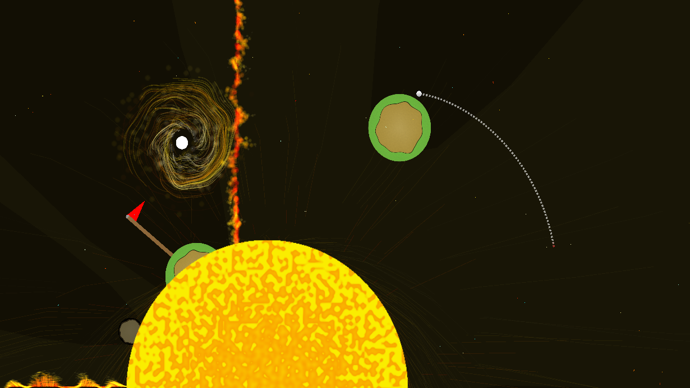
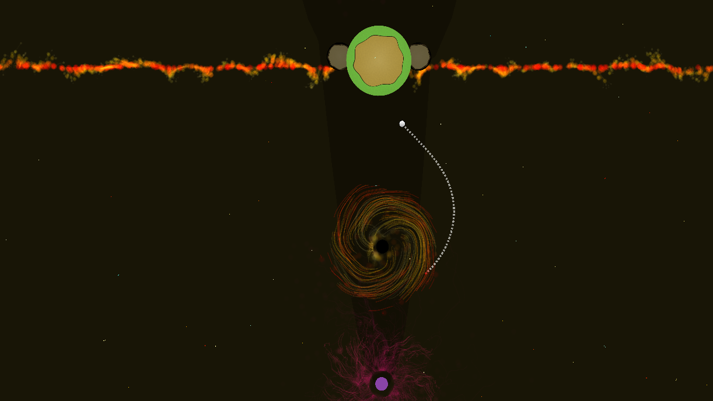

Trajectory is a space-themed mini-golf game where gravity is applied to your ball as it moves. Each planet, asteroid, and hazard exerts a gravitational pull that influences the ball’s trajectory. Your goal is to sink the ball in as few shots as possible. Levels have a set par, and your final rank depends on your shot count and retries. While reaching the goal is easy, mastering the game and earning high ranks such as the optimal “X” rank, completing the level in a single shot, is not.
Trajectory
2D Minigolf With Gravity
Visit The Itch.io Page To Play Online


Design & Development
(REPLACE ME)